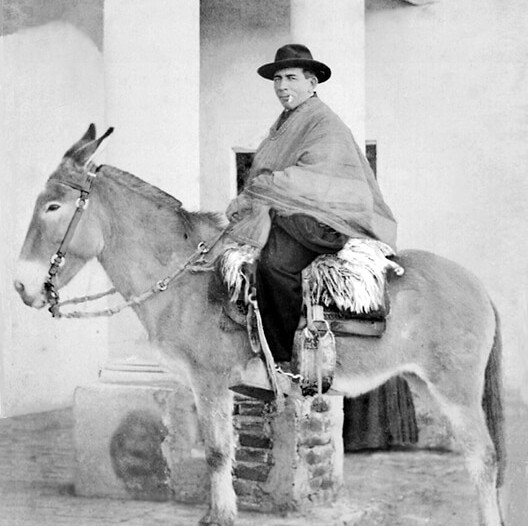
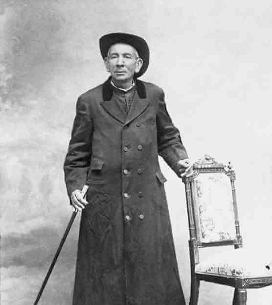
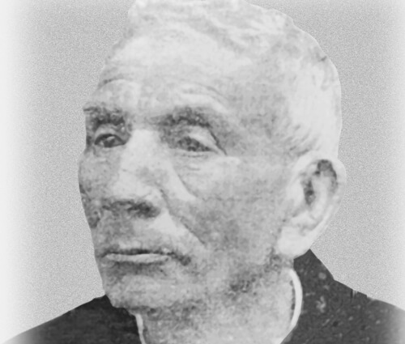
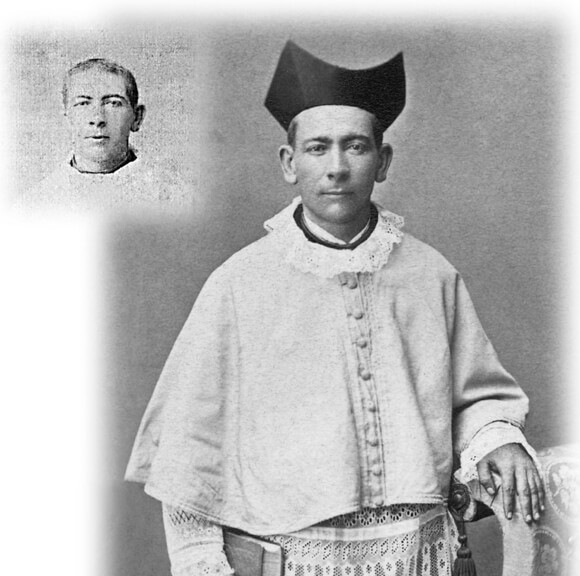
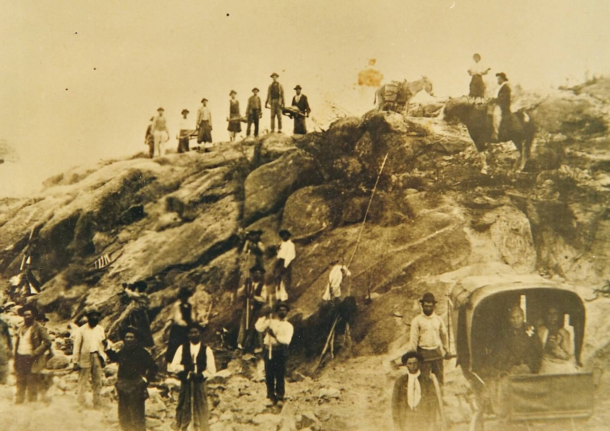

"O Padre Gaúcho" — O Cura das Periferias
"Deus é como os piolhos: está em todas as partes, mas prefere os pobres."

José Gabriel del Rosario Brochero nasceu em 16 de março de 1840 em Carreta Quemada, uma localidade próxima a Santa Rosa de Río Primero, na Província de Córdoba, Argentina. Era o quarto de dez filhos de Ignacio Brochero e Petrona Dávila — uma família camponesa do interior argentino, de fé simples e sólida, marcada pelo trabalho na terra e pela devoção cotidiana. Foi batizado no dia seguinte ao nascimento, como era costume da época.
Desde a infância, José Gabriel demonstrava uma seriedade e uma profundidade espiritual incomuns. Aos dezesseis anos, em 5 de março de 1856, ingressou no Seminário de Nossa Senhora de Loreto, em Córdoba, onde encontraria entre seus colegas o futuro presidente argentino Miguel Ángel Juárez Celman — um detalhe que diz algo sobre a qualidade do ambiente intelectual daquele seminário. Ao longo da formação, tornou-se Terciário da Ordem de São Domingos em 26 de agosto de 1866.
Foi ordenado sacerdote em 4 de novembro de 1866, pelo Bispo José Vicente Ramírez de Arellano, na Diocese de Córdoba. Celebrou sua primeira Missa no dia 10 de dezembro do mesmo ano. Desde os primeiros meses de ministério, destacou-se não pelo brilho acadêmico ou pela vida contemplativa, mas pela disposição concreta e quase teimosa de ir até onde as pessoas estavam — não esperar que viessem até ele.
Em 1867, apenas alguns meses após sua ordenação, Córdoba foi devastada por uma epidemia de cólera. O jovem padre Brochero não recuou: trabalhou incansavelmente nos bairros mais pobres e nas casas dos mais atingidos, assistindo doentes, administrando sacramentos, consolando famílias e se expondo continuamente ao contágio. A epidemia foi seu primeiro grande teste — e sua primeira manifestação pública daquilo que seria o traço mais característico de toda a sua vida: a recusa total de qualquer forma de distância entre ele e o sofrimento dos outros.
Após alguns anos como colaborador na Catedral de Córdoba e como Prefeito de Estudos no Seminário Maior, onde deixou fama de formador rigoroso mas paternal, recebeu em 1869 a nomeação que definiria o restante de sua existência: pároco do Curato de San Alberto, uma paróquia enorme e isolada nas Sierras Grandes de Córdoba, abrangendo um território de cerca de 200 quilômetros de extensão — serras áridas, caminhos de terra batida, poblaciones isoladas sem acesso a serviços básicos e uma população dispersa que mal havia visto um padre em anos.
A chegada de Brochero ao Curato de San Alberto foi um choque para todos — inclusive para ele. A região era pobre, distante e espiritualmente abandonada. Não havia estradas, não havia escolas, não havia estrutura de nenhum tipo. O que havia era um padre novo, uma mula de franja branca chamada Malacara, um poncho, um sombrero e uma convicção absoluta de que Deus estava esperando por aquelas pessoas — e que era seu trabalho ir encontrá-las.
Brochero passou os anos seguintes percorrendo a paróquia de ponta a ponta, de casa em casa, pelos caminhos das serras que só ele e sua mula conheciam. Visitava famílias, batizava crianças, casava casais que viviam juntos há décadas sem sacramento, confessava, pregava, comia o que havia na mesa de cada família — chimarrão, carne assada, mate amargo — sem distinção de classe ou condição. Os paroquianos começaram a chamá-lo de "el cura gaucho" — o padre gaúcho — com a mistura de afeto e respeito que os argentinos do interior reservam para quem de fato vive o que prega.
Um dos instrumentos mais poderosos de seu apostolado foram os Exercícios Espirituais de Santo Inácio de Loyola, que ele adaptou para o contexto simples de sua paróquia e promoveu com entusiasmo surpreendente. Organizava caravanas — às vezes com dezenas de pessoas — que percorriam horas a cavalo ou a pé pelas serras até a Casa de Exercícios que ele próprio construiu em Villa del Tránsito. Ali, homens e mulheres que nunca haviam feito uma confissão sistemática nem meditado a sério encontravam, por alguns dias, um espaço de silêncio e oração que transformava suas vidas. Estima-se que, ao longo de sua vida, Brochero conduziu mais de quarenta mil pessoas a fazer os Exercícios Espirituais.
Brochero não era apenas um pastor espiritual — era um homem de ação concreta. Compreendeu desde cedo que evangelizar pessoas que vivem em miséria material sem simultaneamente trabalhar pelas condições de vida é uma forma de contradição. Ao longo de seu ministério em San Alberto, construiu ou promoveu a construção de:
Uma Casa de Exercícios Espirituais em Villa del Tránsito, que se tornou o coração espiritual de toda a paróquia. Um hospital, o primeiro da região. Um colégio para meninas, trazendo irmãs religiosas para ensinar. Uma Igreja paroquial em Villa del Tránsito — construída com o trabalho dos próprios paroquianos, organizados e motivados por ele. E, talvez mais significativo de tudo: uma estrada ligando a região à cidade de Córdoba, para a qual conseguiu do governo argentino uma concessão após persistente pressão política — porque sabia que sem acesso, aquela população permaneceria perpetuamente esquecida. A estrada foi construída pelos próprios moradores, sob sua supervisão direta.
Francisco citou esse aspecto de sua vida como especialmente atual: "Brochero é um pioneiro em ir às periferias geográficas e existenciais, para levar a todos o amor e a misericórdia de Deus. Ele não ficou no escritório da paróquia."
Por décadas, Brochero visitou e abraçou leprosos — os mais temidos e evitados de sua paróquia — com a mesma naturalidade com que visitava qualquer outro doente. Compartilhou chimarrão, comida, o mesmo ambiente fechado das casas. Em sua velhice, contraiu lepra — a doença que havia recusado tantas vezes em tantos outros. A enfermidade avançou progressivamente: primeiro perdeu a audição, depois a visão, depois os movimentos finos das mãos. Nos últimos anos de sua vida, estava quase completamente surdo, cego e com o rosto desfigurado pela doença.
Em determinado momento, a deterioração física o obrigou a renunciar formalmente ao Curato de San Alberto. Retirou-se por algum tempo para viver com suas irmãs em seu povoado natal. Mas seus paroquianos o reclamaram de volta, e ele voltou — cego, surdo e leproso — a Villa del Tránsito, onde passaria seus últimos anos. O diário católico de Córdoba, poucos dias após sua morte, publicou: "É sabido que o Cura Brochero contraiu a enfermidade que o levou à tumba porque visitava frequentemente e até abraçava a um leproso abandonado por aí."
Morreu em 26 de janeiro de 1914, em Villa del Tránsito — a cidade que, dois anos depois, seria rebatizada em sua homenagem como Villa Cura Brochero. Era a mesma cidade onde havia chegado décadas antes como padre jovem, numa mula chamada Malacara, percorrendo serras que ninguém mais percorria.
O processo de canonização teve início em 1967, cinquenta e três anos após sua morte. João Paulo II o declarou Venerável em 2004. A beatificação, realizada em 14 de setembro de 2013 em Córdoba pelo Cardeal Angelo Amato em nome do Papa Francisco, foi precedida pelo reconhecimento do milagre da cura de Nicolás Flores — um menino que havia sofrido um acidente automobilístico gravíssimo com perda de massa óssea do crânio e de massa encefálica, dado como irrecuperável pelos médicos, que sobreviveu completamente após orações pela intercessão de Brochero. O segundo milagre foi aprovado em 22 de janeiro de 2016, e a canonização aconteceu em 16 de outubro de 2016 na Praça São Pedro, pelo Papa Francisco.
Brochero é hoje o primeiro santo canonizado que nasceu, viveu e morreu na Argentina. Francisco, argentino como ele, escolheu suas palavras com particular afeto: "Gosto de imaginar hoje Brochero pároco em cima da sua mula com a franja branca, enquanto percorria as longas sendas áridas e desoladas dos 200 km da sua paróquia, procurando de casa em casa os vossos bisavós e trisavós, para lhes pedir se necessitavam de algo."
Numa Igreja que debate incansavelmente o que significa "ir às periferias", Brochero é a resposta mais concreta possível: não uma metáfora, não um programa pastoral, não um documento. É um padre de poncho que montou numa mula, percorreu 200 quilômetros de serra, abraçou leprosos, construiu uma estrada e morreu cego e surdo — sem jamais ter pedido para estar em outro lugar.
Sete décadas percorrendo as serras de Córdoba numa mula
16 Mar 1840
Nasce em Carreta Quemada, próximo a Santa Rosa de Río Primero, quarto filho de Ignacio Brochero e Petrona Dávila.
5 Mar 1856
Aos dezesseis anos, entra no Seminário de Nossa Senhora de Loreto, em Córdoba. Conhece o futuro presidente Miguel Ángel Juárez Celman.
4 Nov 1866
Ordenado pelo Bispo José Vicente Ramírez de Arellano. Celebra sua primeira Missa em 10 de dezembro do mesmo ano.
1867
Trabalha incansavelmente nos bairros pobres de Córdoba durante a epidemia, expondo-se ao contágio para assistir os doentes e moribundos.
1869
Nomeado pároco do Curato de San Alberto, nas Sierras Grandes — uma paróquia de 200 km de extensão, isolada e espiritualmente abandonada.
Décadas seguintes
Percorre a paróquia de mula, casa em casa. Constrói estrada, hospital, colégio, Igreja e Casa de Exercícios. Conduz mais de 40 mil pessoas aos Exercícios Espirituais.
Velhice
Anos de visitas e contato com leprosos resultam na doença. Perde progressivamente a audição, a visão e os movimentos. Permanece em Villa del Tránsito.
26 Jan 1914
Falece cego, surdo e leproso em Villa del Tránsito — a cidade que dois anos depois seria rebatizada Villa Cura Brochero em sua homenagem.
14 Set 2013
Beatificado em Córdoba pelo Cardeal Amato, em nome do Papa Francisco, após o reconhecimento do milagre de Nicolás Flores.
16 Out 2016
Canonizado pelo Papa Francisco — primeiro santo canonizado que nasceu, viveu e morreu na Argentina.
Os prodígios reconhecidos pela Igreja para sua beatificação e canonização
01
Córdoba, Argentina · 2008
Nicolás Flores, menino de Falda del Cañete (Córdoba), sofreu um acidente automobilístico gravíssimo que resultou em perda de massa óssea do crânio e de massa encefálica — lesões consideradas incompatíveis com a sobrevivência ou qualquer recuperação funcional pelos médicos que o atenderam. Sua família, em desespero, recorreu em oração à intercessão do Padre Brochero. Nicolás recuperou-se completamente, sem sequelas neurológicas, de forma que os médicos não conseguiram explicar pelos meios naturais disponíveis. O caso foi rigorosamente investigado pela Santa Sé e aprovado como milagre, abrindo caminho para a beatificação em 2013.
Aprovado em 2013 · para a Beatificação02
Argentina · 2014–2015
O decreto reconhecendo o segundo milagre foi assinado pelo Papa Francisco em 22 de janeiro de 2016, abrindo caminho para a canonização marcada para outubro do mesmo ano. Os detalhes completos do beneficiário e da natureza da cura permanecem sob sigilo pontifical, conforme prática habitual da Santa Sé para proteção da privacidade dos envolvidos. A canonização foi realizada em 16 de outubro de 2016, na Praça São Pedro, pelo Papa Francisco — que, sendo ele próprio argentino, reconheceu publicamente o vínculo especial com o primeiro santo canonizado nascido em seu país.
Aprovado em 2016 · para a CanonizaçãoImagens da vida, obra e memória de São José Gabriel Brochero




Imagens utilizadas sob licença de seus respectivos autores. Créditos completos disponíveis aqui.
Documentação utilizada para a elaboração deste perfil
José Gabriel del Rosario Brochero — Wikipédia
Verbete biográfico com referências históricas e processuais
São José Gabriel del Rosario Brochero
Franciscanos OFM · Província Franciscana da Imaculada Conceição do Brasil
Homilia da Missa de Canonização
Papa Francisco · 16 de outubro de 2016 · Praça São Pedro
Senhor Jesus, Tu que deixaste as noventa e nove ovelhas para ir em busca daquela que estava perdida, concede-nos, pela intercessão de São José Gabriel Brochero, a graça de nunca nos contentarmos com a fé que fica no escritório — e de termos a coragem de montar na mula e percorrer as estradas difíceis até onde as pessoas estão.
Ele que construiu estradas para que seu povo não ficasse isolado, que abraçou leprosos quando todos os evitavam, que conduziu dezenas de milhares de pessoas aos Exercícios Espirituais pelas serras de Córdoba, e que morreu cego e surdo sem jamais abandonar sua paróquia — mostra-nos que o Evangelho não tem endereço fixo, e que Deus prefere os pobres.
Intercede por todos os sacerdotes que servem em regiões remotas e esquecidas; pelos que enfrentam doenças no cumprimento de sua missão; e por todos os que são chamados a ir às periferias — geográficas e existenciais — levando a misericórdia de Deus a quem ainda não a conhece. Amém.
· Para uso privado · Primeiro santo nascido, vivido e morto na Argentina · Festa: 16 de março ·